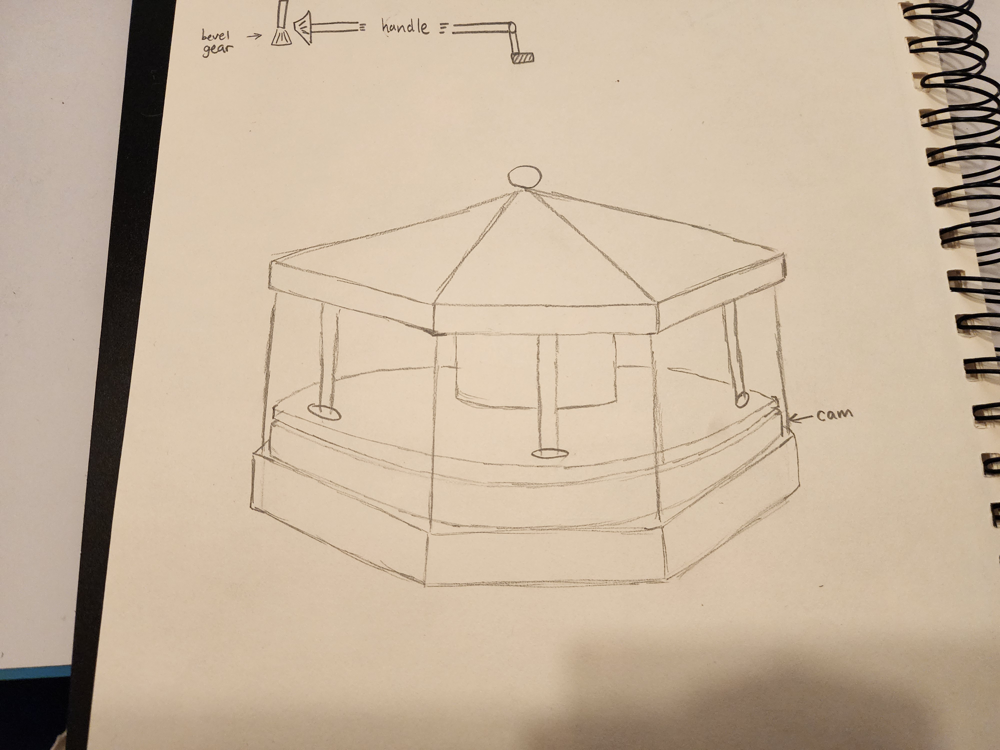
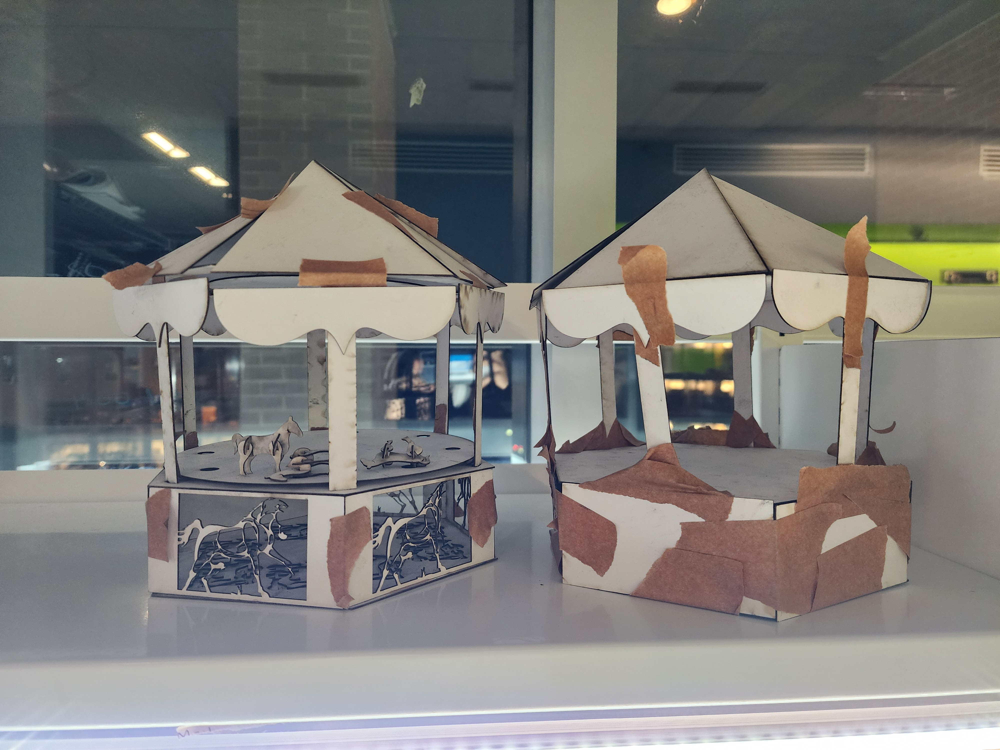
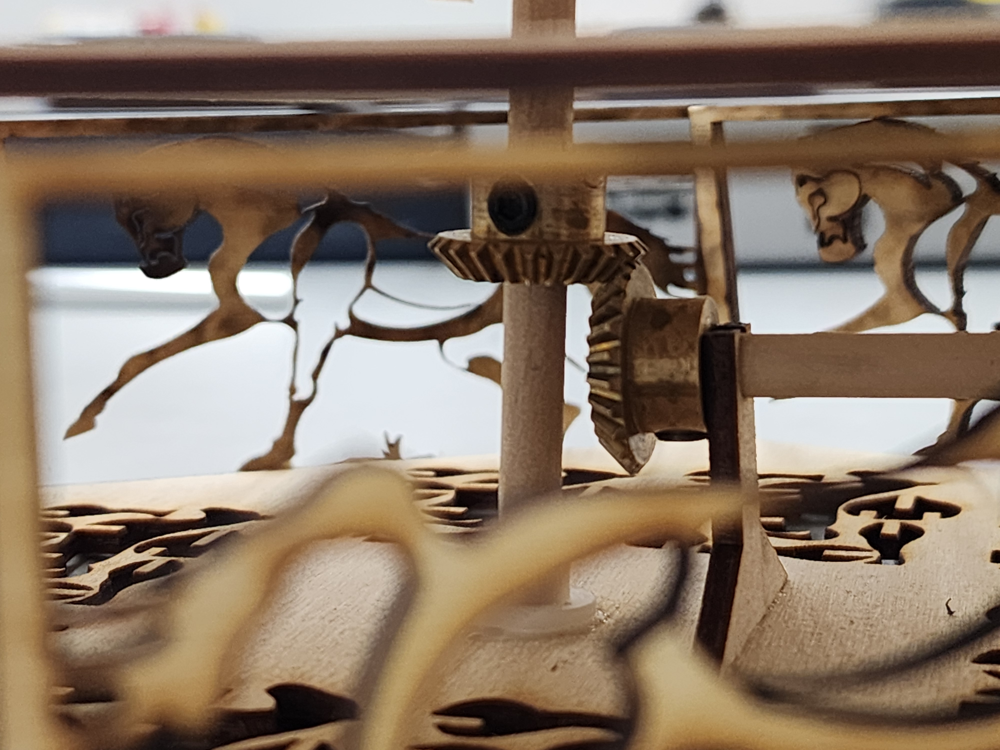
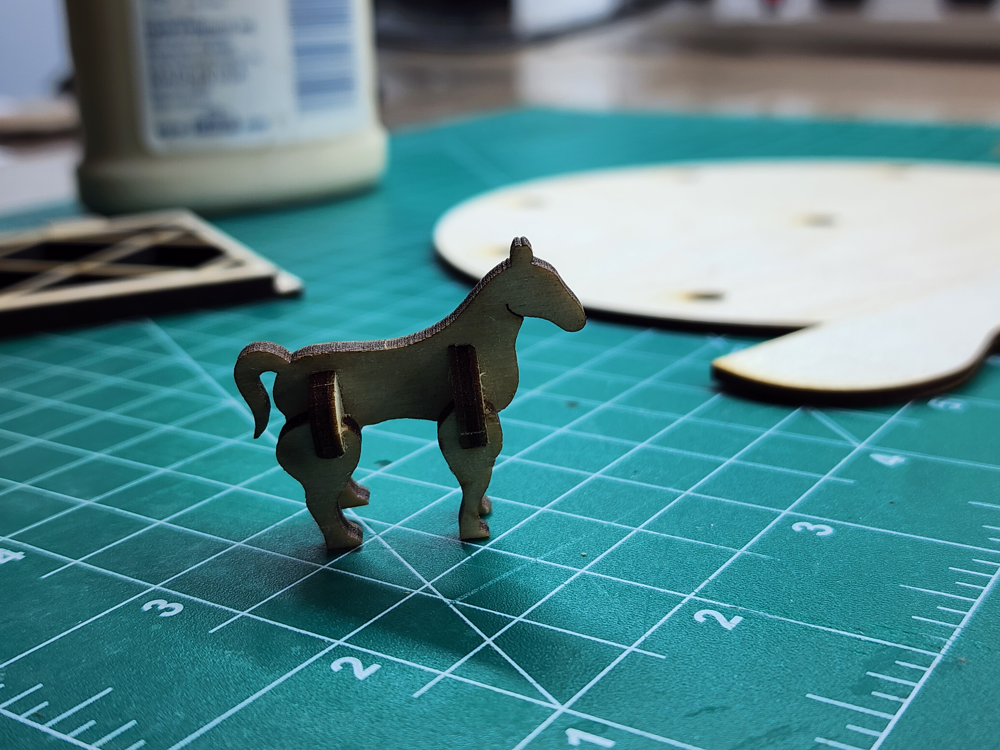

Bevel Gear Driven Carousel Automata
1. Problem & Story
Translate a fully constrained CAD model into a physical, hand-cranked wooden automata using bevel gears to change rotational motion axes reliably.
2. Constraints & Requirements
- Material Limitations: Thin 1/8" plywood stock prone to cracking under assembly press-fits.
- Shaft Orthogonality: Bevel gear meshing required 90-degree alignment without angular deviation.
3. Design & Iteration Process
Initial concept sketches mapped out movement ideas before building chipboard prototypes to verify structural scale and mechanical clearances.


Engineering Challenges & Solutions
- Gear Meshing & Shaft Alignment: Minor spacing errors caused gear binding. Iteratively adjusted shaft support hole tolerances in Onshape Variable Studios and verified fits using dry-fit subassemblies.
- Subsystem Simplification: A multi-axis cam concept generated excessive friction; simplified to a planar bevel-gear rotational system to ensure mechanical reliability.


4. Results
Produced a fully functional kinetic carousel with smooth gear meshing and robust structural joints.

5. Lessons Learned & Reflections
Designing for assembly requires accounting for physical material variations. Using custom alignment fixtures during assembly will be incorporated in future kinetic designs.